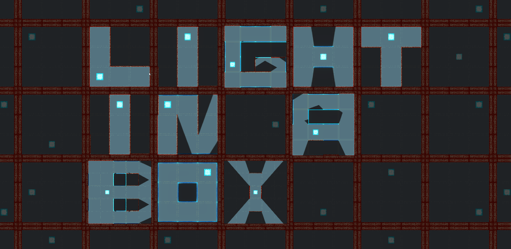
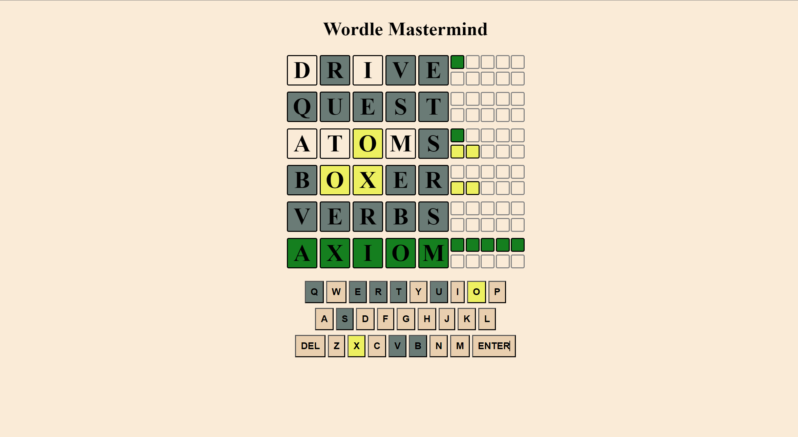

Joshua Wood
I feel my most fulfilled when solving a challenging problem or engaging my creative side. I am an enthusiastic self-starter who is eager to expand my programming knowledge and always excited to explore new experiences beyond my comfort zone.
Projects
Light in a Box
Inspired by my passion for physics and puzzles, Light in a Box uses simple ideas around light, shadow and reflection to create challenging puzzles. My original concept game requires the player to place walls and mirrors to mould 2-dimensional light from its source into a given intricate shape. It is far more challenging than it sounds and, ironically, requires out of the box thinking.
This project was the most challenging I have attempted to date and required me to build a code intensive and deceptively complex lighting and reflection system. Creating this system was a puzzle in and of itself which I thoroughly enjoyed solving. It pushed me to grow my understanding of Unity, in particular its Universal Render Pipeline, and of programming in general.
Some of the the other barriers I overcame in the creation of this project include:
- Created all the sprites and artwork for the game in Krita. Including in-game visual effects like lit and unlit glow effects with shader graphs.
- A functional and sleek UI system.
- Creation of an effective tutorial which explains the tricky to understand premise of the puzzles without becoming long and boring.
Wordle Mastermind
My browser game looks to reimagine the viral New York Times puzzle game, Wordle, and combines it with the traditional board game, Mastermind. By adapting the hint process, I have magnified the problem solving element of the game.
This project required me to develop a system that can detect when matching letters are placed in the correct space, matching letters placed in the wrong space but additionally how to correctly account for when duplicate letters are placed and how this impacts the hint dynamics. Wordle Mastermind also uses media queries to adapt the size of elements to make the game playable on a variety of devices.
My Movie Watchlist

A watchlist creation and management tool built to help users find the perfect film to watch. By allowing the user to select which columns to include, the film conditions criteria and report ordering, the filtering system returns personalised movie suggestions.
The most interesting part of this project was making the filtering system that takes any number of user inputs for: which columns to include in the report, movie criteria to be met and how the report should be ordered, to dynamically generate a single SQL query that returns a report that meets all the users conditions.
Cloud Seeding Research Project

Within my final-year Mathematics group project we created and presented a model that used global positioning and seasonal weather data to assess the effectiveness of cloud seeding as a method to combat climate change.
Cloud seeding is the method of spraying salt aerosols from boats to effect cloud albedo (brightness). Increasing the brightness of clouds has a positive impact on climate change as it increases the amount of light reflected away from the earth and, resultantly, cools it. The program we built took large global weather datasets and ran simulations to see the effect on cloud albedo in different regions at different times of year. Our program returned equally large datasets for us to analyse and draw our conclusions from. This module helped me showcase my communication, teamwork and presenting skills in addition to programming and problem solving.
Jumbles Escape

I was inspired to make my first original videogame project as a creative birthday present for my sister, Charlotte. Drawing heavy inspiration from Pac-Man, the game features my whole family and our dog Jumble as the protagonist.
For this game I created pixel art avatars for each member of the family and of our home. But the feature I am most proud of is the chasing/pathing ai system that had a basic understanding of the floorplan of the house to help it calculate the fastest route to target and traverse the environment effectively.
AR Project

I created this project as an introduction for myself into XR development. This AR app is a simple educational number recognition game for young children where a number will spawn into the real world environment and the user will be prompted to say the number out loud and find its match in the list of numbers shown.
For this project I familiarised myself with XR development in unity and included a system that would generate random numbers that would not repeat, with a colourful progress tracker though the first 10 numbers.
Skills
Below, find my self evaluated skill levels.
Programming Languages
Tools and Engines
Education
Just IT
2023
Software Development Skills Bootcamp
This course cemented and built upon many of the programming skills I have developed over the last few years, while also branching out into different media and programming languages such as Python and JavaScript.
Unity Learn
2021 - 2022
Unity Essentials and Junior Programmer Pathways
As an introduction to Unity, I completed Unity's own Essentials and Junior Programmer Pathways as a way to build a solid understanding of the engine before moving on to building my own original projects.
University of Exeter
2016 - 2019
BSc Mathematics with honours
I received my bachelors in Mathematics from the University of Exeter. Notable modules include:
- Programming for Mathematics
- Cryptography
- Vectors and Matrices
- Numerics and Optimisations
- Graphs, Networks and Algorithms
- Dynamics
- Calculus and Geometry
Glenthorne High School
2009 - 2016
I attended Glenthorne High School where I achieved A-Levels in:
- Mathematics
- Further Mathematics
- Physics
Experience
Self Employed Swimming Teacher
2014 - 2023
I currently work as a swimming teacher privately and with multiple swim schools. This involves: communicating schedules and progress reports with parents; planning and leading fun, engaging and practical swimming lessons; and staying up to date with best swimming practices.
C R Toogood & Co Ltd
2017
Worked at an insurance broker as part of the team transferring the entire catalogue of customer information to a new system in order to improve efficiencies across the company. This included collaborating with team members to develop new processes for more efficient data transfer.